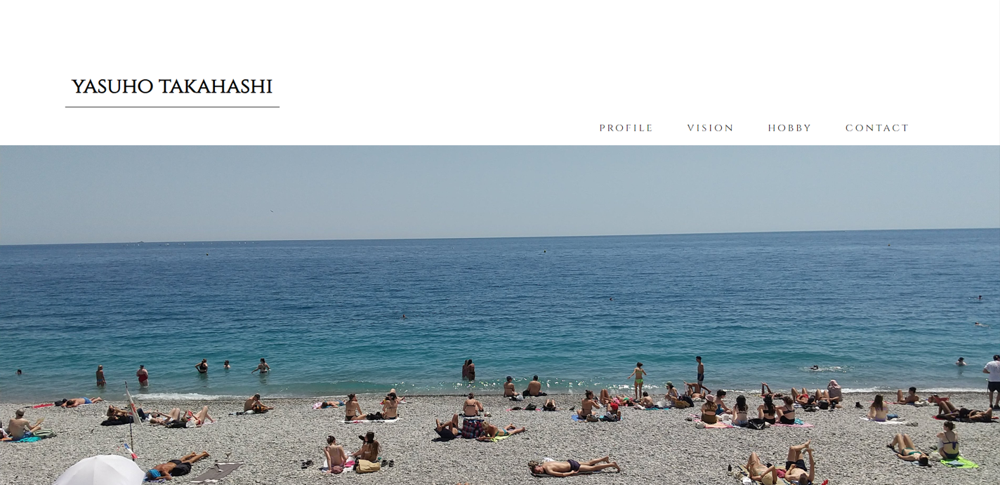
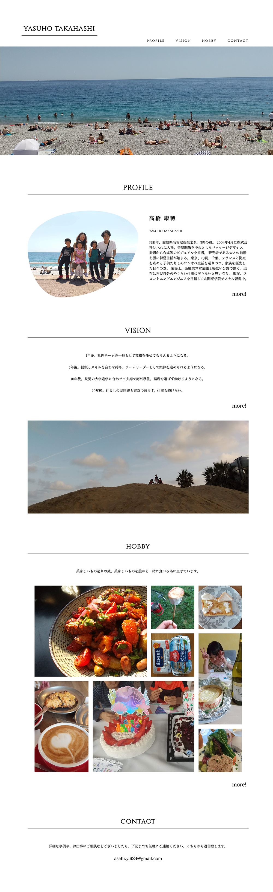
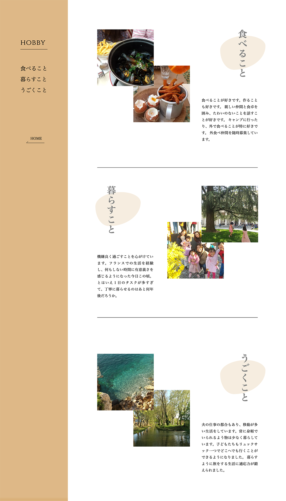
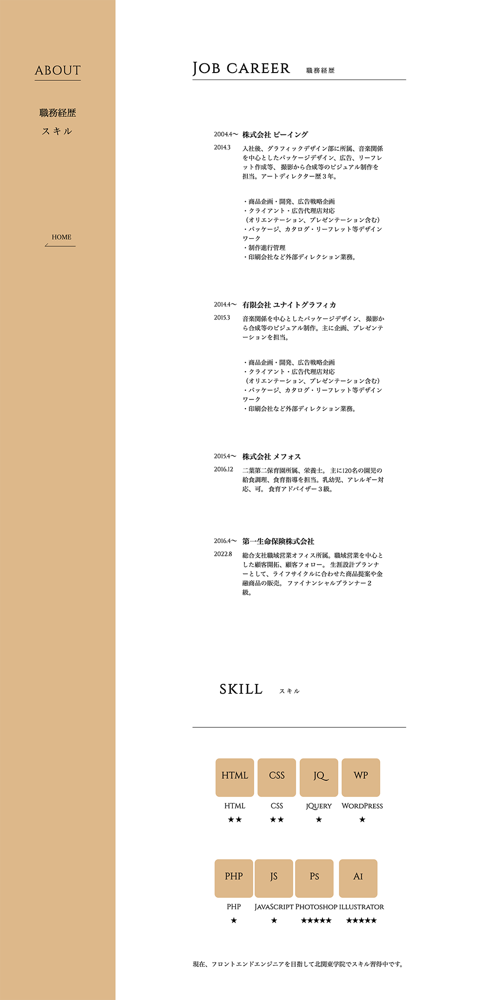

top
about
works
contact
scroll
#
07
自己紹介サイト
cording/design

概要
情報設計
デザイン
サイトを見る
概要
内容
WEBフロントエンド構築の職業訓練校に入学後、1ヶ月目に行った制作課題。 htmlとcssの基本を学び、初めて制作したサイトです。
目的
自己紹介
ターゲット
転職を検討中の２０代、３０代の社会人男女
制作期間
デザイン１日間 コーディング４日間
使用ツール
VSCode
情報設計
読みやすさを重視した導線
１ページ目はユーザーが疲れづらい文字量に要約し、写真をすっきりと見せることで、 ユーザーが楽に閲覧できるようにしています。
レイアウトに一貫性を持たせる
コンテンツごとのレイアウトを統一することで、情報の定位置を作り、ページ内の同線がわかりやすくなっています。
スキルの見える化
スキルをレーティングの星で表現することで視覚的にわかりやすくしています。
デザイン
top

hobby

about
